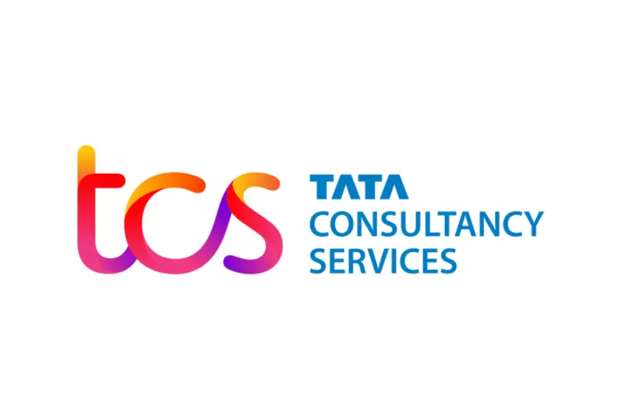

Skills ▼

LinkedIn | +91 9623323755 | nikitabodke262@gmail.com | GitHub
Analyst Programmer - Fidelity International (04/2024 – Present)
Developed a web application for NAV calculation for Mutual Funds.
Improved code coverage from 30% to 50% using JUnit and Mockito for TDD.
Conducted code analysis using SonarQube with CI/CD tools.
Systems Engineer - Tata Consultancy Services (TCS) (07/2021 - 04/2024)
Developed a web application for documenting compliance with federal laws and transitioning from 4G to 5G.
Executed 200+ CRUD operations, created 20+ triggers, and developed 10+ procedures.
Designed and implemented Spring RESTful web services using Spring Boot.
Bachelor of Engineering - Pune Institute of Computer Technology (08/2017 - 07/2021)
Electrical and Telecommunication Engineering – 9.14/10